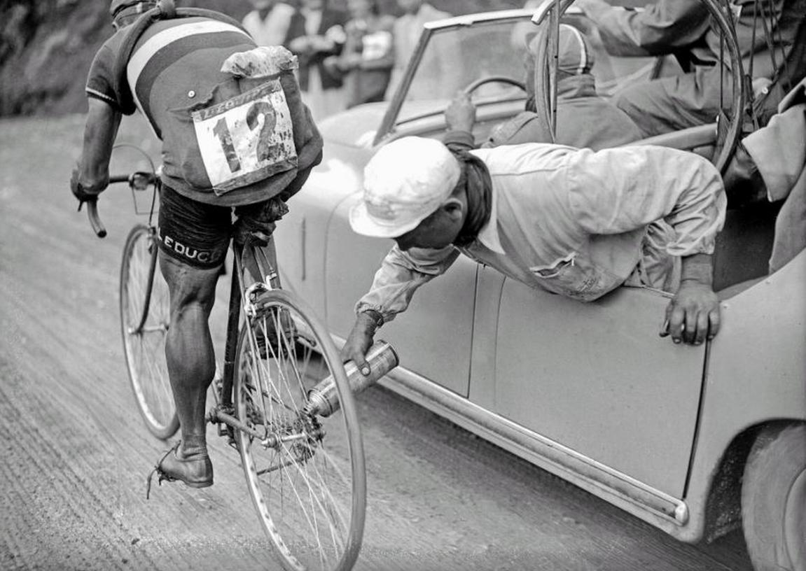
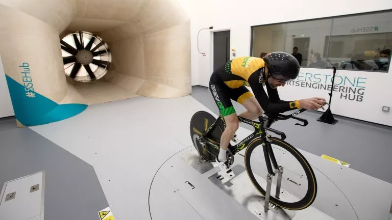
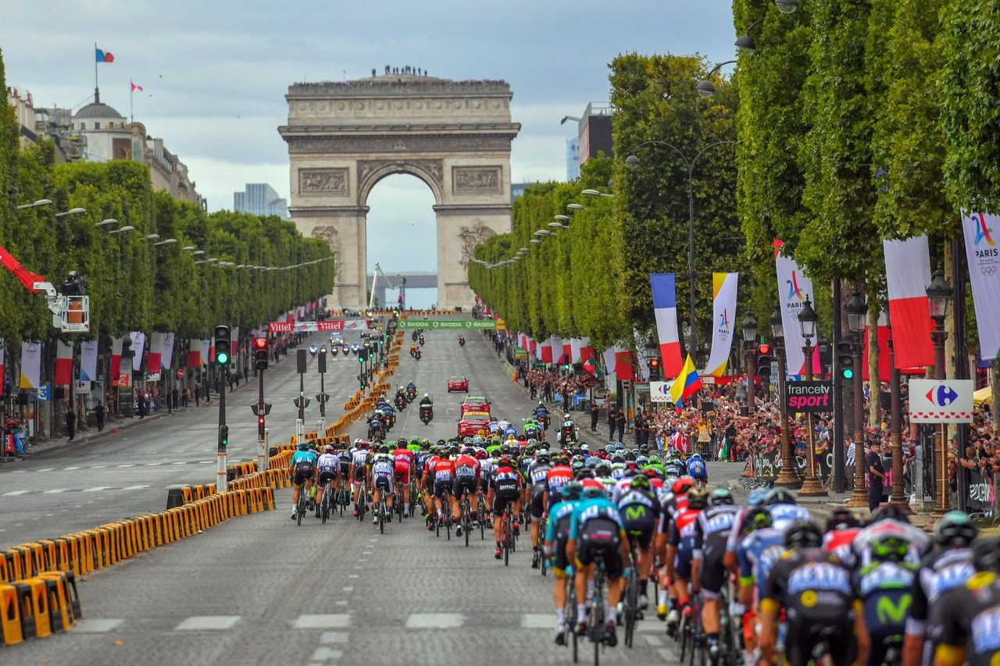
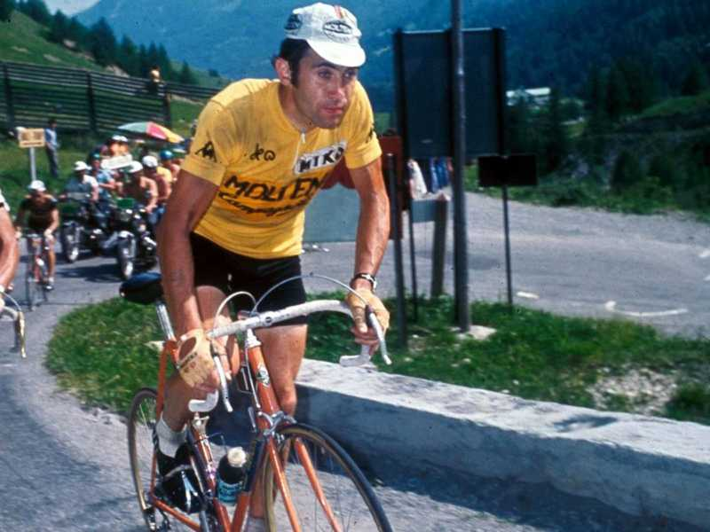
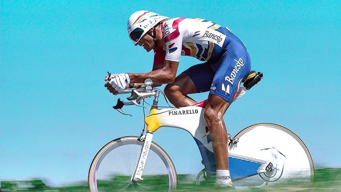
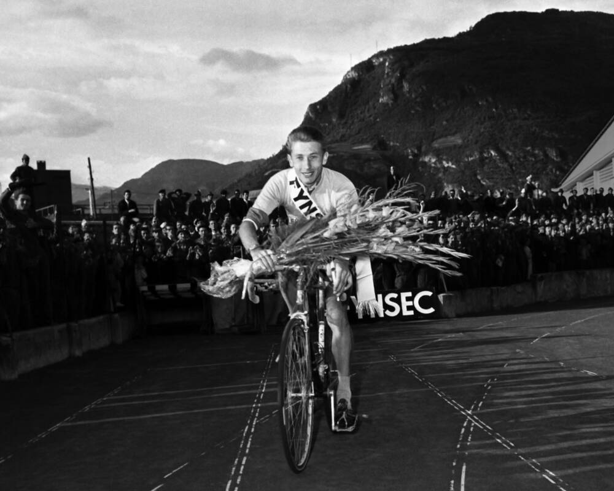

Tour de Francia
Pasado, presente y futuro del ciclismo mundial. Descubre la historia, la tecnología y el equipamiento que definen la carrera más legendaria.
Tu centro de ciclismo
El Tour de Francia es mucho más que una carrera: es el escenario donde la resistencia humana, la innovación técnica y la pasión por el ciclismo se fusionan cada verano. En esta plataforma hemos reunido todo lo que necesitas para sumergirte en ese universo.
Desde la draisiana de 1817 hasta las bicicletas de carbono con cambios electrónicos del pelotón actual, recorremos más de dos siglos de evolución. Acompañamos cada hito con imágenes, contexto histórico y explicaciones pensadas tanto para el aficionado curioso como para el ciclista veterano que busca datos precisos.
Nuestra tienda oficial complementa la experiencia con productos seleccionados del equipamiento profesional: maillots, cascos aerodinámicos, componentes de alta gama y bicicletas que han marcado época en la Grande Boucle. Todo con la calidad que exige el deporte de élite.
- Línea de tiempo interactiva con hitos históricos.
- Artículos detallados sobre cada era y categoría del ciclismo.
- Tienda oficial con productos del pelotón profesional.
- Calculadora de impacto ambiental y guías de sostenibilidad.
- Contacto directo y formulario de feedback para la comunidad.




Etapas que Hicieron Historia
Algunas jornadas del Tour trascienden el deporte. Subidas infernales, sprints agónicos y gestas que el ciclismo jamás olvidará.

Alpe d'Huez
21 curvas de leyenda. Esta subida de 13,8 km al 8,1% de desnivel medio es el termómetro del Tour desde 1952. Sus hairpins numerados han visto las mayores hazañas y derrotas del pelotón.

Mont Ventoux
El Gigante de Provenza, con sus 1.909 metros, es una de las cimas más temidas. Sus últimos kilómetros sobre un paisaje lunar de piedra caliza son una batalla contra el viento, el oxígeno y uno mismo.

Campos Elíseos
Llegar a París es el sueño de todo corredor. Ocho vueltas a un circuito de 6,5 km alrededor del Arco de Triunfo cierran tres semanas de sufrimiento. El esprint final decide al último ganador.

Tourmalet
El mítico puerto pirenaico, con 2.115 metros de altitud, es el paso más alto del Tour. Sus rampas del 10% durante 19 km han sido testigos de las batallas más encarnizadas entre los grandes del pelotón.
Leyendas del Pelotón
Hombres que definieron épocas, rompieron récords y elevaron el ciclismo a la categoría de arte. Sus nombres están grabados en la memoria del Tour.

Eddy Merckx
Considerado el mejor ciclista de todos los tiempos. Su apodo lo dice todo: devoraba a sus rivales con una sed de victoria insaciable. Cinco Tours, cinco Giros, tres Mundiales y un palmarés que abruma.

Bernard Hinault
El último gran patrón francés. Carisma, fiereza y un instinto competitivo fuera de serie. Ganó cinco Tours, tres Giros y dos Vueltas. Nadie ha igualado su palmarés completo en Grandes Vueltas.

Miguel Induráin
Sangre fría, precisión suiza y una zancada hipnótica. Dominó el Tour entre 1991 y 1995 con cinco victorias consecutivas. Su contrarreloj era un espectáculo de biomecánica perfecta sobre el asfalto.

Jacques Anquetil
El primer pentacampeón del Tour. Una elegancia sobre la bicicleta que ocultaba una voluntad de hierro. Dominaba la contrarreloj con una técnica impecable y fue pionero en la preparación científica.
Innovación sobre Ruedas
La tecnología ha transformado cada aspecto de la bicicleta. Del hierro al carbono, del cable a lo inalámbrico. Así ha evolucionado la máquina.
Fibra de Carbono
Conocida como el "oro negro" del ciclismo, la fibra de carbono revolucionó los cuadros en los años 90. Hoy, las bicicletas del Tour pesan menos de 6,8 kg, el mínimo reglamentario, sin sacrificar rigidez ni absorción de vibraciones. Los ingenieros moldean capas de carbono con orientaciones precisas para optimizar cada zona del cuadro.
Grupos Electrónicos
Shimano Di2, SRAM eTap y Campagnolo EPS han eliminado los cables de cambio. Con pulsos eléctricos y baterías de larga duración, los cambios son instantáneos y precisos incluso bajo la máxima carga en las rampas más duras del Alpe d'Huez. La sincronización automática entre platos y piñones optimiza la cadencia al instante.
Aerodinámica Extrema
Cada gramo de resistencia al viento cuenta. Los túneles de viento son tan importantes como los entrenamientos. Cuadros de perfil NACA, ruedas de 80mm, cascos integrados y maillots cosidos al milímetro. A 50 km/h, el 90% de la potencia del ciclista se emplea en vencer el aire. Reducir esa resistencia es la obsesión moderna.
Potenciómetros y Datos
El ciclismo profesional es hoy una ciencia de datos. Los potenciómetros miden cada vatio generado, permitiendo a los directores deportivos saber en tiempo real el esfuerzo de cada corredor. La frecuencia cardíaca, la potencia, la cadencia y la velocidad se cruzan para decidir cada ataque y cada relevo.
Cultura y Consejos
El ciclismo es mucho más que pedalear. Técnica, nutrición, mentalidad y respeto por la carretera forman parte del ADN de todo ciclista.

Entrenamiento Inteligente
No se trata solo de acumular kilómetros. El entrenamiento por intervalos, la progresión de carga y el descanso activo son las claves del desarrollo. Los profesionales alternan rodajes largos de baja intensidad con series explosivas que simulan los esfuerzos del Tour. Escuchar al cuerpo es el primer mandamiento.
Nutrición sobre la Marcha
Una etapa de montaña quema entre 6.000 y 8.000 calorías. La alimentación del ciclista es constante y estratégica: geles, barritas, frutos secos y bebidas isotónicas se consumen cada 20-30 minutos. La hidratación es todavía más crítica: perder solo el 2% del peso corporal en agua reduce el rendimiento hasta un 10%.
Seguridad Vial
Compartir la carretera exige respeto mutuo. Señalizar los giros, mantener la línea, usar luces incluso de día y anticipar los movimientos del tráfico son hábitos que salvan vidas. El casco no es negociable, y un buen juego de frenos puede marcar la diferencia entre una caída y una anécdota.
Comunidad y Respeto
El pelotón es un organismo vivo donde la cooperación es ley. Relevarse, compartir el viento y cuidar al compañero caído son valores grabados a fuego. Fuera de la competición, los clubes ciclistas son el alma del deporte: rutas compartidas, talleres colaborativos y una pasión que une generaciones.
Voces del Pelotón
Las mejores frases del ciclismo, dichas por quienes sintieron el asfalto, el viento y la gloria del Tour.
El Tour de Francia no se gana con las piernas, se gana con el corazón.
Nunca he visto a nadie sufrir tanto como yo en el Tour. Y sin embargo, cada año vuelvo.
La bicicleta es la máquina perfecta. Transforma la energía humana en movimiento con una eficiencia que ningún motor iguala.